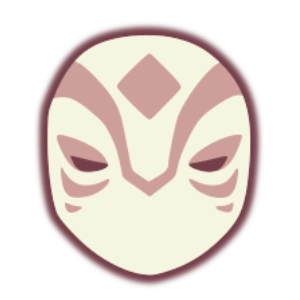
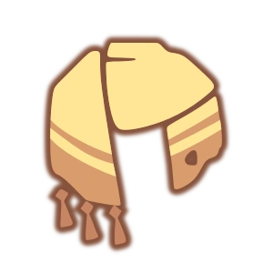
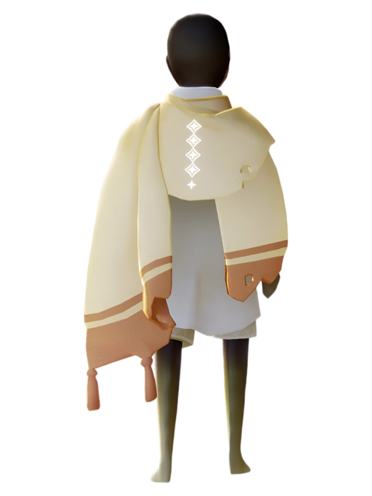
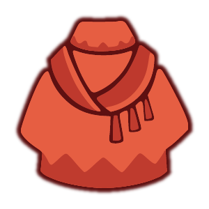
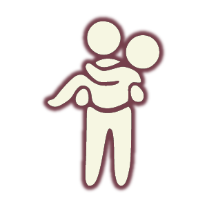
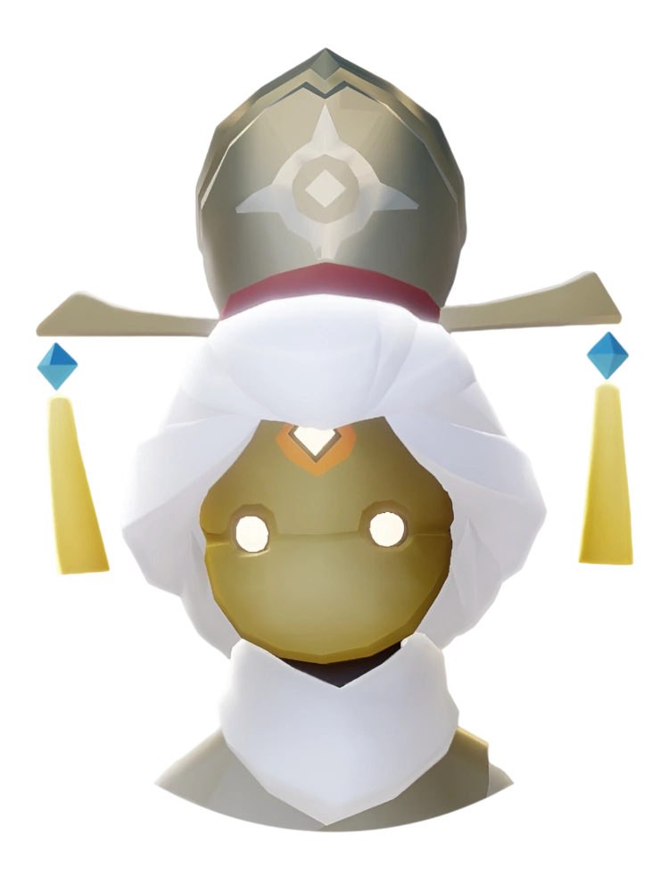

Sky: COTL - Spirits in the SEASON OF THE NINE-COLORED DEER

|
ROLE(S): Quest Giver / Season Guide and LOCATION(S): Crescent Oasis / Home
PERSONALITY TRAITS (Wiki): üî∏ Entrusted as a confidante; Has a sharp memory for details and observes at least as much as they speak, and knows which and when creatures arrive at the oasis. |
|
|---|---|---|
 |
space space space space space |
ROLE(S): Attainable Spirit / Gathers and Sells Herbs --> LOCATION(S): Under a big red cloth near the river, close to the temple.
PERSONALITY TRAITS (Wiki): üåø Tends to take other people's suggestions, can get resentful when overlooked; bored with daily routine, yet when collecting the best herbs, it's all for keeps! |
 |
space space  space space space |
ROLE(S): Attainable Spirit / Hunting --> LOCATION(S): Flying up from the location of the Spirit of Mural, you'll find the Hunter.
PERSONALITY TRAITS (Wiki): üèπ Admires Feudal Lord's doings; not as humble as they'd think! The harder tracking a creature is, the more the Hunter respects it. Invigorated by taking longer paths. |
space  space space |
ROLE(S): Attainable Spirit / Feudal Lord  --> LOCATION(S): After the Herb Gatherer and towards the temple, at a corner.
PERSONALITY TRAITS (Wiki): üëë Relishes trying out new contraptions and remembers all palace guard names; thinks very much about loved ones and public perception. |
|
space  space space |
ROLE(S): Attainable Spirit / Princess --> LOCATION(S): Enter the temple and go to the 2nd floor; go through the pointed door near the throne, down the path, and at the bottom look to the left.
PERSONALITY TRAITS (Wiki): üè∞ Loves thinking up new trends, an avid collector of all sorts; dives deep into a hobby a little then moves on entirely, and loves taking naps. |
 or
or 

 to
to 

 to
to 

 to
to